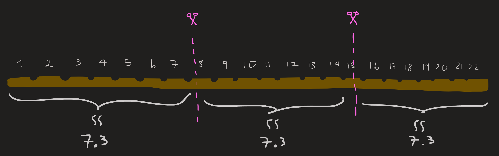
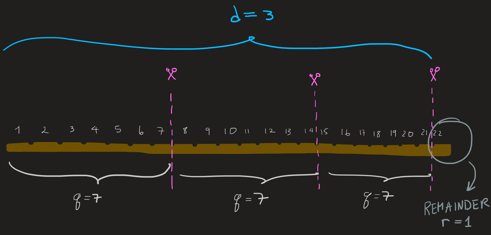
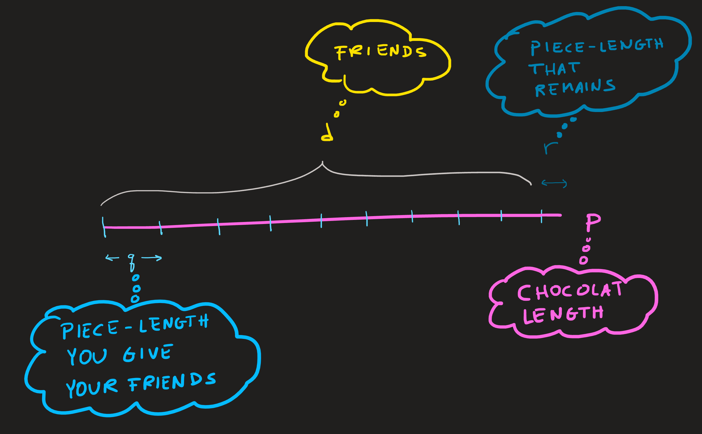
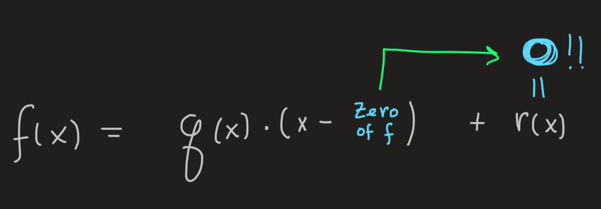
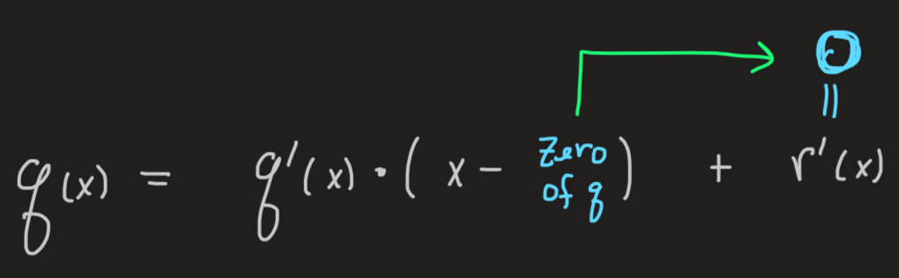
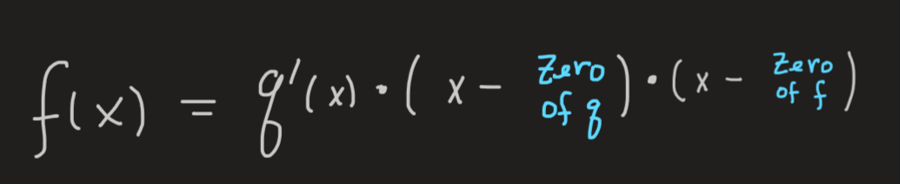
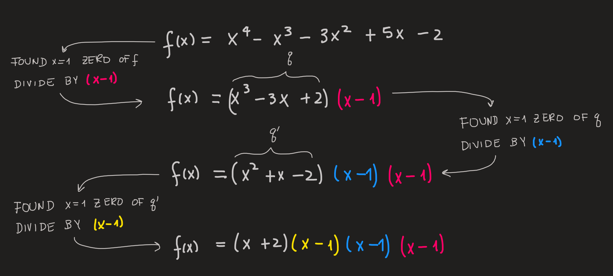
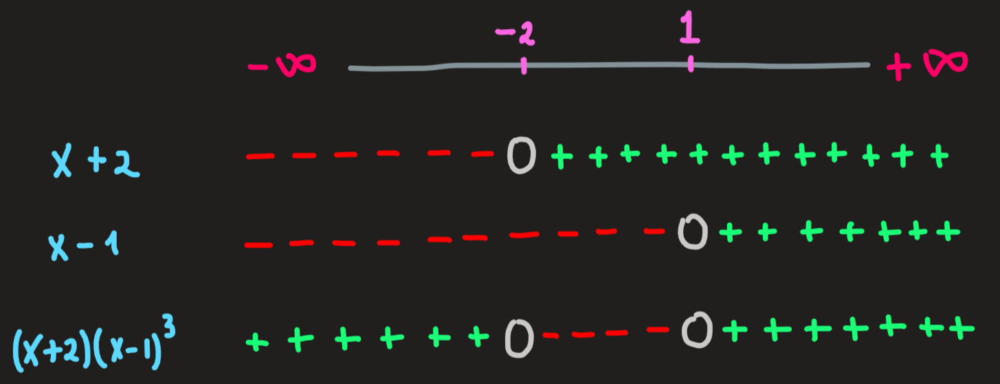
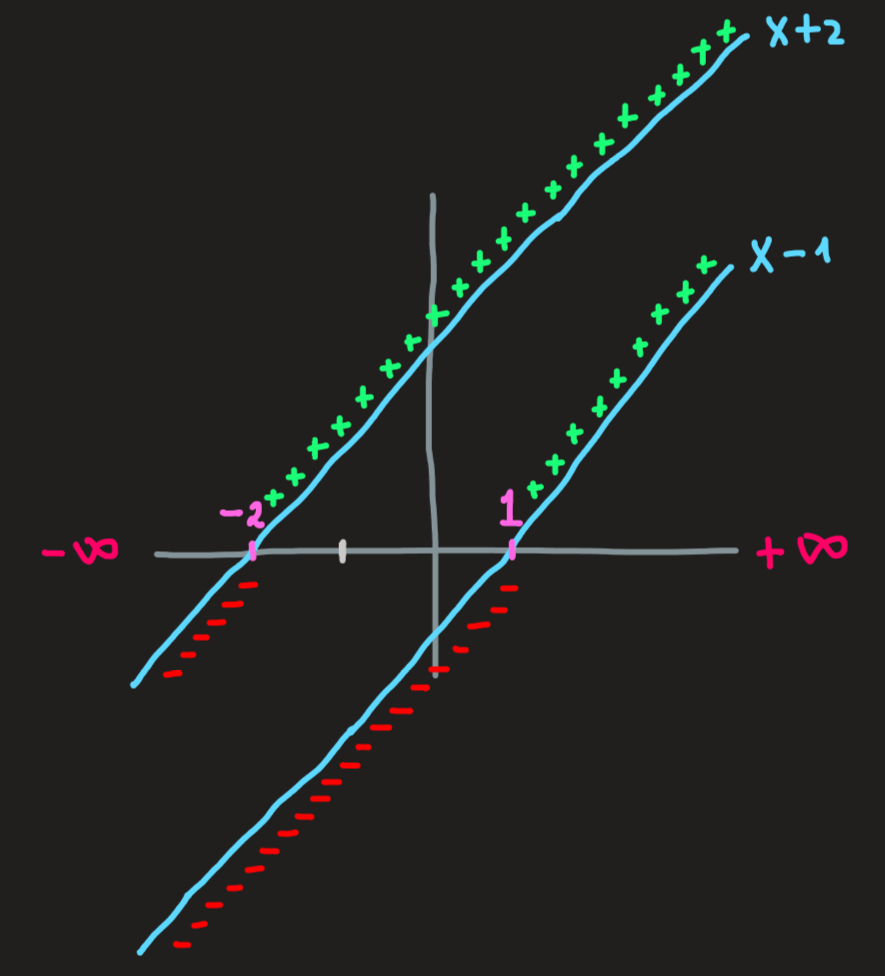

Polynomial division
Look at the two divisions below:
\[ \begin{equation} \frac{x^3+1}{x+2}\qquad \text{vs}\qquad \frac{1001}{12} \end{equation} \tag{1}\]
What do they have in common?
In this notes we see 9 important ideas behind division of polynomials and integers. We’ll start by integers since its easier.
1) Analogy between polynomial notation and integer notation
Many of you may have forgotten, but the position of watch integer in the symbol \(1001\) has a meaning, specifically:
\[ 1001 = 1\cdot 10 ^3+0\cdot10^2+0\cdot10^1+1\cdot10^0 \]
The left hand side is just a super compact way of writing the right side.
Similarly, \(12\) is just a symbol for \(1\cdot 10^1+2\cdot 10^0\).
With this reminder we can see clearly the connection between the numerators and denominators in Equation 1 .
\[ \begin{cases} x^3+1 = 1\cdot x^3+0\cdot x^2 + 0 \cdot x^1 + 1\cdot x^0\\ 1001 = 1\cdot 10 ^3+0\cdot10^2+0\cdot10^1+1\cdot10^0 \end{cases} \]
and
\[ \begin{cases} x+2 = 1 \cdot x^1 + 2\cdot x^0\\ 12 = 1\cdot10^1+2\cdot10^0 \end{cases} \]
The connection is: powers of \(10\) are replaced by powers of \(x\).
With such a bridge, we may expect the practical realization of this calculation will also be similar. You could have done polynomial division on the 4th grade.
2) To divide two integers is to NOT ONLY find the quotient but also find the remainder!!
Lets see this with a picture.

Imagine a chocolate bar of length \(p=22\) with grooves at each unit. You want to divide it, cutting only at the grooves, by your \(d=3\) friends. You don’t want to cheat anyone (do you?), so you must give pieces of the same length and, of course, also give them the maximum possible piece-length.
You might immediately think to measure the chocolate bar length, pull a calculator and compute the division
\[ \frac{22}{3}\approx 7.3 \]
Then measure and mark the cuts at \(7.3\) and \(14.6\); then cut the thing and give then. See picture above.
With minimal error in the calculation, because the division is only approximately \(7.3\) and error in the actual measurements, you succeeded. Congratulations….but this is not what was being asked!
I remind you: you can only cut at the grooves that already came with the chocolate, they are spaced by \(1\)unit.
In this case a question naturally arises, what is the maximum piece-length \(q\), you can give your friends? Certainly it is not the real number \(7.3\), the length \(q\) must be an integer.
The following picture answers the problem (think about it before looking at it)

The unique solution is to cut at \(7\) and \(14\) and \(21\) units. Give your \(d=3\) friends chocolate pieces of length \(q=7\); a small one of length \(1\) remains, you can eat that as a prize.
The takeaway is that when you divide two things and the result you desire must be an integer thing, then a remaining thing is left (for you).
I would like now to make things more complicated and write the statement above in proper math language, its a theorem:
Let \(p\) and \(d\) be two integers where \(p\geq d\). Then there exists an integer \(r\) such that \(0\leq r<d\) and an integer \(q\geq 0\) such that
\[ p=qd+r \]
Lets break down the meaning of this theorem. We start by requiring that \(p\) and \(d\) be integers (a chocolate bar has an integer number of pieces and you have an integer number of friends - right?) and thus positive, we also require that \(p\) is larger or equal to \(d\).
If we imagine \(p\) as the length of a line segment (our chocolate bar), this length is the sum of two length
\[ p=qd + r \]
The \(qd\) length, is the length of each piece you give your friends times the number of friends, thus \(qd\) is the part of the chocolate bar you give away.
The \(r\) length, is the length of the remaining piece, you keep that!
Summing both, \(qd +r\) yields the original chocolate bar length \(p\).

To divide \(p\) by \(d\) subjected to the fact we want an integer result, means to find the integer result \(q\) and then the integer remainder \(r\).
In practice, when we seek for the value of \(q\), we seek for the highest possible \(q\), that way ensures the smallest length \(r\). By smallest I mean, its length \(r\) is not divisible by \(d\) - Please STOP here and ensure you understand this!
We can guarantee that \(r\) is not divisible by \(d\) by stating that \(r\) must be smaller than \(d\), thus the requirement \(0\leq r<d\) in the theorem above.
3) The key strategy behind computing the division of integers and an example
To compute the division of the integer \(1001\) by \(12\) under the constrain that the result is also an integer is to compute the values of \(q\) and \(r\) that obey the following equation:
\[ 1001 = q \times 12 + r \qquad 0\leq r<12 \]
How do we proceed in finding these numbers? The key strategy is very simple: guess them!
Its not a random guess, this is not a lottery, its an educated guess; educated by clues provided by the problem itself.
See the following line of reasoning (and guesses) to get the idea:
- Step 1: decompose \(1001\) and \(12\) into powers of \(10\). This a clue that will to aid (educate) our guesses!
\[ \begin{cases} 1001 = 1\cdot 10^3+0\cdot 10^2 +0\cdot 10^1+1\cdot 10^0 = 1\cdot 10^3 +1\cdot 10^0\\ 12 = 1\cdot 10^1 + 2\cdot 10^0 \end{cases} \]
Step 2: Observe both sides of the equation:
\[ 1\cdot 10^3 +1 = q\cdot(10+2)+r \tag{2}\]
It is very useful to identify what are the largest numbers on both sides of the equation: the largest value on the left side is \(1\cdot 10^3\), the largest value on the right side is \(q\cdot 10\). Hence we expect that whatever \(q\) is, it must, when multiplied by \(10\), to give a number with is close or equal to \(1\cdot 10^3\), for otherwise, balancing the sides of the equation is impossible. We should balance first these two terms, then we deal with the smaller ones.
Our guess of \(q\) must be guided by this observation.
Step 3: Guess a value of \(q\) which makes large terms similar or equal, i.e., \(q\cdot 10\) close to \(1\cdot 10^3\). There are many possible guesses and all of them would work! Here is one possibility \(q=10^2\).
Step 4: Now that we have a value for \(q\) lets see how large is the remainder.
Substituting \(q=10^2\) into Equation 2 gives:
\[ \begin{align} &1\cdot 10^3 +1 = 1\cdot 10^3 +2 \cdot 10^2 + r\\ \implies&r=-2\cdot10^2+1 \end{align} \]
The remainder is negative and this presents no problem, what we really want is the final remainder to be positive. The remainder is also larger (in absolute value) than the divisor \(12\). This means the remainder is still divisible by \(12\), hence we proceed into computing the division of \(-2\cdot 10 +1\) by \(12\), this is what we’ll do in step 5. To end step 4 let us summarize in a single expression what we know so far:
\[ 1\cdot 10^3+1=\overbrace{10^2}^q\cdot(10+2)+\overbrace{(-2\cdot 10^2+1)}^r \tag{3}\]
Step 5: Write the division of the remainder \(-2\cdot 10+1\) by \(12\):
\[ -2\cdot 10^2+1 = q'\cdot(10+2)+r' \]
and analyse the equation.
Our goal now is to guess \(q'\) that makes \(r'\) as small as possible, we achieve that by balancing the largest terms on both sides of the equation, in this case we want to guess a \(q'\) that when multiplied by \(10\) is close to \(-2\cdot 10^2\), the largest number on the left.
Step 6: Guess \(q'=-2\cdot 10\) and then substitute into the equation:
\[ \begin{align} &-2\cdot 10^2+1 = -2\cdot 10^2 -4\cdot 10 + r'\\ \implies &r'=4\cdot 10+1 \end{align} \]
The remainder is \(4\cdot 10+1\) and is still larger than \(12\), thus divisible by \(12\), we’ll do this calculation in step 7. Let’s end this step by summarizing what we know so far:
\[ \begin{cases} 1\cdot 10^3+1=\overbrace{10^2}^q\cdot(10+2)+\overbrace{(-2\cdot 10^2+1)}^r\\ -2\cdot10^2+1 =\overbrace{(-2\cdot10)}^{q'}\cdot(10+2)+\overbrace{(4\cdot10+1)}^{r'} \end{cases} \]
Step 7: We repeat the process. Write the equation for the division of the current remainder \(4\cdot 10+1\) by \(12\), analyse it and guess the quotient \(q''\) that makes \(r''\) as small as possible:
\[ 4\cdot 10 +1 = q''\cdot (10+2)+r'' \tag{4}\]
Guessing \(q''=4\) we balance the largest term on the lhs. The corresponding remainder is:
\[ r'' = -7 \]
Since the remainder is smaller than \(12\) the guessing process ends here.
Once again we summarize everything we know so far:
\[ \begin{cases} 1\cdot 10^3+1=\overbrace{10^2}^q\cdot(10+2)+\overbrace{(-2\cdot 10^2+1)}^r\\ -2\cdot10^2+1 =\overbrace{(-2\cdot10)}^{q'}\cdot(10+2)+\overbrace{(4\cdot10+1)}^{r'}\\ 4\cdot 10+1 = \overbrace{4}^{q''}\cdot(10+2)+\overbrace{(-7)}^{r''} \end{cases} \tag{5}\]
Step 7: Use Equation 5 to write
\[ 1\cdot 10^3 +1 = (10^2-2\cdot 10+4)\cdot 12 -7 \]
which simplifies into:
\[ 1001=84\cdot 12 -7 \tag{6}\]
Step 8: Our final remainder, the \(-7\) in Equation 6 is negative, to make it positive we resort to a trick: add \(0=12-12\) to the rhs:
\[ 1001=(84-1)\cdot 12+(12-7) \]
In conclusion:
\[ 1001=83\cdot 12 +5 \]
The division is complete, our quotient is \(q=83\) and the remainder is the positive number \(5\).
The division of \(1001\) by \(12\) can be done in many ways, all ending in the result \(1001=83\cdot 12 +5\). What distinguishes the different ways are the guesses of \(q\), \(q''\), etc one makes. Among all this approaches we find one very well known by you, the long division of integers, which you learned in elementary school.
The particular sequence of steps we followed above was chosen so that it can be compared with the sequence of step in dividing \(x^3+1\) by \(x+2\).
4) To divide two polynomials is to NOT ONLY find the quotient but also find the remainder!!
The division of polynomials is analogous to the division of integers, the division of \(1001/12\) made us to seek the \(q\) and \(r\) that satisfy the equation \(1001 = q\times 12 +r\), while having the \(r\) as small as possible, which means \(0\leq r <12\), so that the remainder is not divisible by \(12\).
The division of polynomials, for example \((x^3+1)/(x+2)\) , requires to find the function \(q(x)\) and \(r(x)\) that obey
\[ x^3+1=q(x)\times(x+2)+r(x) \qquad 0\leq\deg r < 1 \tag{7}\]
The constraint \(0\leq\deg r<1\) ensures the degree of the remainder is the smallest, meaning in this case, not divisible by \(x+2\) whose degree is \(1\).
The following theorem summarizes the problem to solve:
Let \(f\) and \(g\) be non-zero polynomials where \(\deg f \geq \deg g\) (this assumption is analogous to saying \(1001>12\)). Then there exist polynomials \(q\), \(r\) such that:
\[ f(x)=q(x)g(x)+r(x) \qquad 0\leq\deg r < \deg g \quad\text{(Analogous to $0\leq r < 12$)} \]
The ideas and strategies presented above for division of integers can be employed to the division of polynomials.
5) The key strategy behind computing the division of polynomials and an example
As usual we guess what \(q(x)\) might be and then compute the corresponding remainder \(r(x)\). By checking the constraint \(0\leq \deg r<1\) at each stage of the guessing process, we decide whether to terminate it or keep going. Let us see this in practice:
Step 1: Observe both sides of the equation:
\[ x^3+1=q(x)\times(x+2)+r(x) \qquad 0\leq\deg r < 1 \tag{8}\]
and identify the largest powers: on the lhs we have \(x^3\) and on the rhs we have \(q(x) \cdot x\). This is useful information, because we want to match the largest powers on either side of the equation. This is the only way the equal sign will hold.
Step 2: We want to guess what \(q(x)\) based on this matching observation we did at step 1, hence \(q(x)=x^2\) :
Substituting into Equation 8, we compute the remainder of the current guess:
\[ \begin{align} &x^3+1=x^2\times(x+2)+r(x)\\ \implies &r(x) = -2x^2+1 \end{align} \]
Is the constraint that the remainder is as “small” as possible, \(0\leq \deg r <1\), satisfied by this remainder? We clearly see from the \(x^2\) power that its degree is \(2\), the constraint is not satisfied and that means this remainder is divisible by \(x+2\).
As we did for the integer division we summarize our calculations:
\[ x^3+1 = x^2\cdot(x+2)+\overbrace{(-2x^2+1)}^r \]
Step 3: The division \((-2x^2+1)/(x+2)\) is done by guessing the quotient \(q'(x)\) and the remainder \(r'(x)\):
\[ -2x^2+1 = q'(x)(x+2)+r'(x) \tag{9}\]
We proceed as we always did above and analyze the equation before attempting any guess. The highest degree terms in either side of the equation are \(-2x^2\) and \(q'(x)\cdot x\), we must match these, this will guide our guess.
Step 4: To match the highest powers of the equation, set \(q'(x)=-2x\)
Substituting into Equation 9 we compute the remainder:
\[ \begin{align} &-2x^2 +1 =-2x(x+2)+r'(x)\\ \implies &r'(x) = 4x+1 \end{align} \]
Again, the degree of the current remainder still does not obey \(0\leq \deg r' <1\), thus the remainder is divisible by \(x+2\). Before doing this calculation we summarize calculations:
\[ \begin{cases} x^3+1 = x^2\cdot(x+2)+\overbrace{(-2x^2+1)}^r\\ -2x^2+1 = -2x(x+2)+\overbrace{(4x+1)}^{r'} \end{cases} \]
Step 5: Division of \(4x+1\) by \(x+2\) means to solve the equation:
\[ 4x+1 = q''(x)(x+2)+r''(x) \tag{10}\]
We should match \(q''(x)\cdot x\) with \(4x\) - the higher power term on the lhs.
Step 6: Guess \(q''(x)=4\) and substitute into Equation 10 to get:
\[ \begin{align} &4x+1 = 4(x+2)+r''(x)\\ \implies & r''(x)=-7 \end{align} \]
Finally we arrive at \(\deg(-7)=0\) as we needed by the condition \(0\leq\deg r < 1\), the process of division end here.
Collecting results we have:
\[ \begin{cases} x^3+1 = x^2\cdot(x+2)+\overbrace{(-2x^2+1)}^r\\ -2x^2+1 = -2x(x+2)+\overbrace{(4x+1)}^{r'}\\ 4x+1 = 4(x+2)+\overbrace{(-7)}^{r''} \end{cases} \tag{11}\]
Step 7: From Equation 11 we arrive at the result of our division:
\[ \begin{align} x^3+1&=\overbrace{x^2}^{q(x)}\times(x+2)+\overbrace{(-2x^2+1)}^{r(x)}\\ &=\overbrace{x^2}^{q(x)}\times (x+2) + \overbrace{(-2x)}^{q'(x)}(x+2) +\overbrace{(4x+1)}^{r'(x)}\\ &=\overbrace{x^2}^{q(x)}\times (x+2) + \overbrace{(-2x)}^{q'(x)}(x+2)+\overbrace{(+4)}^{q''(x)}(x+2) +\overbrace{(-7)}^{r''(x)}\\ &=(x^2-2x+4)(x+2)-7 \end{align} \]
We conclude that:
\[ x^3+1 = (x^2-2x+4)(x+2)-7 \]
Compare this result with Equation 6 !!!
6) Polynomial division is useful in polynomial factoring
The decomposition
\[ f(x)=q(x)g(x)+r(x) \]is key in factoring polynomials.
Factoring polynomials
Consider \(f(x) = x^2-1\). We know by inspection that \(f(1)=0\) and using our division procedures above we find:
\[ \overbrace{x^2-1}^f = \overbrace{(x+1)}^q\overbrace{(x-1)}^g+\overbrace{0}^r \]
This simple example is a particular case of the following fact:

A very important observation: If somehow we know a zero of \(f\) the division of \(f(x)\) by \(x-\text{zero of $f$ }\) yields a zero remainder!
Now, consider a more complicated polynomial \(f\):\[ f(x) = x^4 -x^3-3x^2+5x-2 \]
Imagine, that we know it has a zero at \(x=1\), an observation which could be arrived by inspecting its graph. Using polynomial division we find, as expected, a complete division, nothing remains, \(r=0\):
\[ \overbrace{x^4 -x^3-3x^2+5x-2}^f = \overbrace{(x^3-3x+2)}^q(x-1)+\overbrace{0}^r \]
But inspection of \(q\) reveals that \(q(1)=0\), the quotient has a zero as well, using again polynomial division we find \(r'=0\):
\[ \overbrace{x^3-3x+2}^q = \overbrace{(x^2+x-2)}^{q'}(x-1)+\overbrace{0}^{r'} \]
In general if we know a zero of \(q\) then again, division of \(q(x)\) by \(x-\text{zero of $q$}\) yields again a zero remainder:

Therefore:

And the same story continues with \(q'\).
Notice that a zero of \(q\) is automatically a zero of \(f\). And a zero of \(q'\) is a zero of \(f\) as well.
Now repeat the process and inspect the prime quotient \(x^2+x-2\), what do we find? We find that \(q'(1)=0\), using again polynomial division, yes! A zero remainder again:
\[ \overbrace{x^2+x-2}^{q'} =\overbrace{(x+2)}^{q''}(x-1)+\overbrace{0}^{r''} \]
Here is a summary of the sequence of steps:

Collecting terms we found:
\[ x^4-x^3-3x^2+5x-2 =(x+2)(x-1)(x-1)(x-1)+0 \]
The lower the degree of the polynomial the easier it is to find its zeros by inspecting the function. Figuring out the original zero (the zero of \(f\)) is the hardest part, a graph might help in our guess work, if nothing else, just use trial and error. If it is found, congrats yourself, you just made one step of \(n\) steps.
7) Why factoring polynomials is cool?
One key aspect one should keep in mind, is that finding the zeros of a polynomial and factored polynomial goes hand in hand. As we seen, the zeros of \(x^4-x^3-3x^2+5x-2\) are the singlet \(-2\), and the triplet of \(1\); knowing this allowed us to write this polynomial as \((x+2)(x-1)^3\). Going the other way around, starting from a polynomial given by \((x+2)(x-1)^3\) we know, just by looking at this formula, the zeros are \(-2\) and a triplet \(1\). Knowing the zeros is important or should I say knowing the factored form of a polynomial is important because, in-between those zeros, the polynomial must either positive (above the x-axis) or negative (below the x-axis). Additionally, note that the factored form of a polynomial is a product of atomic polynomials, in the current case it the product of four terms of degree one, \(x+2\) and three \(x-1\); the sign (positive or negative) of each is easily computed, they are just lines in the plane! As a result the sign of the product polynomial can also be easily computed from the sign of the a product of the terms. It goes without saying: The good polynomial is the factored polynomial.
What we intend to do now is precisely to find the sign (positive or negative) of the product polynomial in-between the zeros (\(-2\) and \(1\)), in other words, we want to compute the following sets:
\[ \begin{align} \{x\in\mathbb{R}\,\,|\,\,x^4-x^3-3x^2+5x-1>0\}\\ \{x\in\mathbb{R}\,\,|\,\,x^4-x^3-3x^2+5x-1<0\} \end{align} \tag{12}\] We already know the zeros of \(x ^ 4-x ^ 3-3x^2+5x-1\) which are embedded in the terms
\(x+2\) is zero at \(x=-2\)
\(x-1\) has a zero at \(x=1\)
Now, to compute the sign of the term, draw a table as follows: in the first column put the factors, the first row is suppose to represent the real line, in it we highlight key points, which in the present case are the zeros of the factors, the point at \(-2\) and \(1\) , and as reference we should include the infinities (“end points” of the real line) as well:
| Real line | \(-\infty\) | \(-2\) | \(1\) | \(\infty\) | |||
|---|---|---|---|---|---|---|---|
| \(x+2\) | \(-\) | \(-\) | \(0\) | \(+\) | \(+\) | \(+\) | \(+\) |
| \(x-1\) | \(-\) | \(-\) | \(-\) | \(-\) | \(0\) | \(+\) | \(+\) |
| \(x-1\) | \(-\) | \(-\) | \(-\) | \(-\) | \(0\) | \(+\) | \(+\) |
| \(x-1\) | \(-\) | \(-\) | \(-\) | \(-\) | \(0\) | \(+\) | \(+\) |
| \((x+2)(x-1)^3\) | \(+\) | \(+\) | \(0\) | \(-\) | \(0\) | \(+\) | \(+\) |
Here an equivalent but clearer picture of this table, which I prefer:

In the rows \(x+2\) and \(x-1\) fill the zeros as \(x=-2\) and \(x=1\) respectively. Now, take the \(x+2\) row as an example, there is only one zero, hence before that zero we have a definite sign and after this zero we have also a definite sign, to find these signs we can just pick any two \(x\)-values, picking \(x=-3\) and \(x=1\) we compute \(-3+2 = -1\) which is negative and thus the region \((-\infty,-2)\) must be negative; computing \(1+2=3\) we get a positive value, thus the region \((-2,\infty)\) is positive. We repeat the same approach and pick two numbers, one before and other after \(x=1\) the zero of \(x-1\) to check its sign, the results are shown above.
The last row is also easy to fill from the signs of \(x+2\) and \((x-1)^3\). Notice the cube power, being an odd number, does not change the sign of \(x-1\).
From the last row we can read the answer for our question Equation 12 , we conclude:
\[ \begin{align} &\{x\in\mathbb{R}\,\,|\,\,x^4-x^3-3x^2+5x-1>0\}=(-\infty,-2)\cup (1,+\infty)\\ &\{x\in\mathbb{R}\,\,|\,\,x^4-x^3-3x^2+5x-1<0\}=(-2,1) \end{align} \] The table method to find the signs of a complicated polynomial is fine and good, but I would like to emphasize the central idea behind it. What the table essentially is, is a representation of the graph of the factors with just the signs singled out. As such an alternative way, which I actually prefer, to find the answer to Equation 12 is to just graph the terms of the product polynomial:

And from it read the signs from the lines:
Cool ! :)
8) Method of undetermined coefficients for integer division
A general strategy to solve the problem:
\[ 1001=q\cdot 12 +r\qquad 0\leq q<12 \tag{13}\]
starts by splitting the parameters of the equation into powers of \(10\)
\[ \begin{split}&1001=1\cdot 10^3+0\cdot 10^2+0\cdot 10^1+1\cdot 10^0\\&12=1\cdot 10^1+2\cdot 10^0\\\end{split} \]
and the unknowns \(q\) and \(r\) as well:
\[ \begin{split}&q=a\cdot 10^2+b\cdot 10^2+c\cdot 10^0\\&r=\alpha \cdot 10^0\end{split} \]
for some real numbers \(a\), \(b\), \(c\) and \(\alpha\). Note that \(q\) must be at most a power \(10^2\) to guarantee a \(10^3\) of \(1001\), meanwhile the remainder \(r\) which must be between \(0\) and \(12\) has to be a number proportional to \(10^0=1\).
Substituting we find
\[ 1\cdot 10^3+0\cdot 10^2+0\cdot 10^1+1\cdot 10^0=(a\cdot 10^2+b\cdot 10^1+c\cdot 10^0)\cdot (1\cdot 10^1+2\cdot 10^0) +\alpha \cdot 10^0 \]
Rearranging, we factor the same powers on the right side, which gives us:
\[ 1\cdot 10^3+0\cdot 10^2+0\cdot 10^1+1\cdot 10^0=a\cdot 10^3+(2a+b)\cdot 10^2+(2b+c)\cdot 10^1+(2c+\alpha)\cdot 10^0 \tag{14}\]
The goal of determining what is \(q\) and \(r\) that satisfy the conditions Equation 13 becomes the goal of determining \(a\), \(b\), \(c\) and \(\alpha\) that satisfy Equation 14.
Both sides of Equation 14 are equal provided the coefficients of the same powers of \(10\) are equal, that yields the following system of equations to solve:
\[ \begin{cases}10^3:\,\,\,1=a\\10^2:\,\,\,0=2a+b\\10^1:\,\,\,0=2b+c\\10^0:\,\,\,1=2c+\alpha\end{cases} \]
with the additional constraint \(0\leq \alpha <12\).
The solution of this system of equations is \(a=1\), \(b=-2\), \(c=4\) and \(\alpha=-7\) . Thus:
\[ \begin{split}&q=1\cdot 10^2-2\cdot 10^1+4\cdot 10^0=84\\&r=-7\cdot 10^0=-7\end{split} \]
Hence, \(1001=84\cdot 12-7\), observe the remainder is negative, therefore we modify the aesthetics of this result in order to make it positive and below \(12\). Adding \(0=12-12\) to the right hand side we find:
\[ \begin{split}&1001=84\cdot 12-7+12-12\\\implies&1001=83\cdot 12+5\end{split} \]
The final result is \(1001=83\cdot 12+5\) as we computed through other methods.
9) Method of undetermined coefficients for polynomials division
Here we present our problem by casting it as a system of equations to solve. Some students might prefer this approach.
Comparing the lhs and rhs of Equation 7 we notice:
the polynomial \(q(x)\) must have a degree equal to \(2\)
the degree of \(r(x)\) is \(0\)
From this we know the general from of these polynomials to be:
\[ \begin{split}&q(x) := ax^2+bx+c\\&r(x) := \alpha \end{split} \]
Substituting we find:
\[ x^3+1=(ax^2+bx+c)(x+2)+\alpha \]
Expanding the rhs and lumping the same powers of \(x\) we get:
\[ x^3+1=a x^3+(2a+b) x^2+ (2b +c)x^1+(2c+\alpha) \]
The polynomial on the right is equal to the the left if the coefficients of the same powers are the same, i.e., they satisfy the following system of equations
\[ \begin{cases}x^3:\,\,\,1=a\\x^2:\,\,\,0=2a+b\\x^1:\,\,\,0=2b+c\\x^0:\,\,\,1=2c+\alpha\end{cases} \]
The solution is \(a=1\), \(b=-2\), \(c=4\) and \(\alpha=-7\):
\[ x^3+1=(x^2-2x+4)(x+2)-7 \]
The similarities between the division of integers and polynomials should be obvious, since we just replace the powers of \(10\) by powers of \(x\).